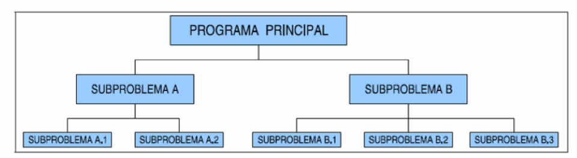

4. Funcions
4.1 Què son i per a què s'utilitzen
Si un programa és molt llarg, és a dir, ocupa moltes línies de codi, tendix a complicar-se molt i a ser costós d’entendre.
Per tant, basant-nos en la idea de dividix i venceràs, farem ús de la tècnica coneguda com descomposició modular, amb la qual cosa es descompon el programa (mòdul) en mòduls més xicotets i, per tant, més fàcils d’entendre. Eixe procés també és conegut com disseny descendent o top-down.

Això s’aconseguix amb les subrutines. També anomenades subprogrames, funcions, procediments, mòduls o bé mètodes, en el cas de llenguatges orientats a objectes, com Java.
Cal anar fent eixa descomposició successivament. Però fins quan? Hem de parar de descompondre quan un mòdul (o funció, mètode...) faça una feina molt concreta.
Definició de funció
Una funció és un bloc d’instruccions que executa una tasca concreta i a la qual se li dóna un nom. Esta funció és invocada des d’altra o altres funcions.
Els avantatges de la descomposició modular són:
- Facilita la resolució d’un problema.
- Facilita modificacions posteriors ja que els programes són més fàcils de llegir.
- Reduix el temps de desenvolupament, usant mòduls ja implementats.
- Diversos programadors poden col·laborar en la resolució d’un problema.
- Millora la depuració, ja que podem anar corregint mòduls individualment.
4.2. Declaració de funcions en Python
| Python | |
|---|---|
On tenim que:
def nomFuncioserveix per a indicar que estem creant una funció, amb el nom indicat. El nom ha de complir les regles de creació dels noms.param1, param2, ..., paramN→ és la llista de paràmetres, separades per comes que seràn l'entrada de la funció.- Desprès es posarà el caràcter
:i a continuació un bloc indentat el cos de la funció. return expressió→ Si la funció ha de retornar un valor, al final de la funció cal posar la paraula return junt a la dada o expressió que ha de retornar.
Funció que calcula la mitjana
4.3. Àmbit i visibilitat de varibles
Hi ha distints tipus de variables, sense tenir en compte el seu tipus. Es poden classificar atenent a diferents criteris, i el més important és l’àmbit o visibilitat, que és la zona del programa on la variable és accessible. Depén d’on s’ha declarat la variable:
- Variables globals
- Variables locals
- Paràmetres formals
Altra classificació és segons el temps de vida: duració en memòria de la variable. Depén d’un especificador opcional de la variable. Ja es veurà més endavant.
4.3.1 Variables globals
Es definixen fora de les funcions (dins la classe en Java, o el programa principal en Python). El seu àmbit és qualsevol funció de la classe.
En Python son globals totes aquelles funcions que estan definides fora de qualssevol funció.
4.3.2 Variables locals
Es definixen al principi d’un bloc de sentències (bé d’una funció o d’un bloc anònim que hàgem creat, com un bucle).
El seu àmbit és el bloc on estan definides, i el temps d’execució és des que comença el bloc fins que acaba. És a dir: es crea quan s’entra al bloc i es destruix quan s’ix.
Example
| Python | |
|---|---|
4.3.3 Paràmetres formals
Són variables d’enllaç entre la crida a una funció i la definició de la funció.
Estan definides entre els parèntesis de la capçalera de la definició de la funció.
L’àmbit i comportament és el mateix que les variables locals en la funció on estan definides: es creen en entrar a la funció i es destruixen en eixir.
Paràmetres formals
Tenir en compte que canvis als paràmetres formal no afecten als actuals (als de la crida):
Example
Encara que es sume el valor a la x (local a la funció) el valor de a no és modifica (variable local).
4.4 Més sobre parámetres
4.4.1 Valor per defecte dels paràmters
En python podem asignar valors per defecte als paràmetres, inicialitzant-los en la pròpia funció. Això també ens permetrà el cridar-los sense importar la posició:
Proves de diversos arguments
4.4.2 Paràmetres múltiples
De vegades no sabem quans paràmetres passare, com per exemple la funció print() que adment molts paràmetres, això ho aconseguim indicant que rebrem una colecció de paràmetres, com segueix:
Múltiples paràmtres
args és una col·lecció de tipus
tupla, de la que parlarem més endavant
Si volem passar una col·lecció de atributs, valors, com si fos un diccionari podriem fer-ho amb la següent sintaxi:
Example
4.4.3 Tipat dels paràmetres
A python, desprès de la seua creació es va afegir la possibilitat d'indicar el tipat, tant dels paràmetres com el tipus de retorn, de la mateixa manera que Java:
Simplement és una eina per a la comprovació de tipat mitjançant eines externes, ja que l'interpret de Python no verifica res d'això. Més informació al següent enllaç.
Eines per a comprovar els tipus podem trobar mypy o pydantic